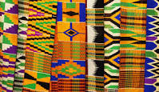
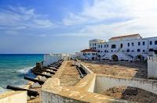
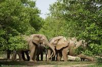

About Ghana
Ghana, officially the Republic of Ghana, sits on the Gulf of Guinea in West Africa. Home to nearly 33 million people, it is celebrated as one of Africa's most stable democracies and was the first sub-Saharan nation to gain independence from colonial rule in 1957 under the visionary Kwame Nkrumah. The country's rich tapestry of over 100 ethnic groups — including the Akan, Ewe, Ga, and Dagomba — weaves a society bound by shared pride, warmth, and the spirit of ubuntu.
- Capital Accra
- Population ~33 million
- Language English (official), Twi, Ga, Ewe & more
- Currency Ghanaian Cedi (GHS)
- Area 238,533 km²
- Independence 6 March 1957
Weather

Location
Accra, Ghana
Temperature
32 °C
Wind Speed
14 km/h
Condition
Partly Cloudy
Wind Chill
Calculating…
Highlights


